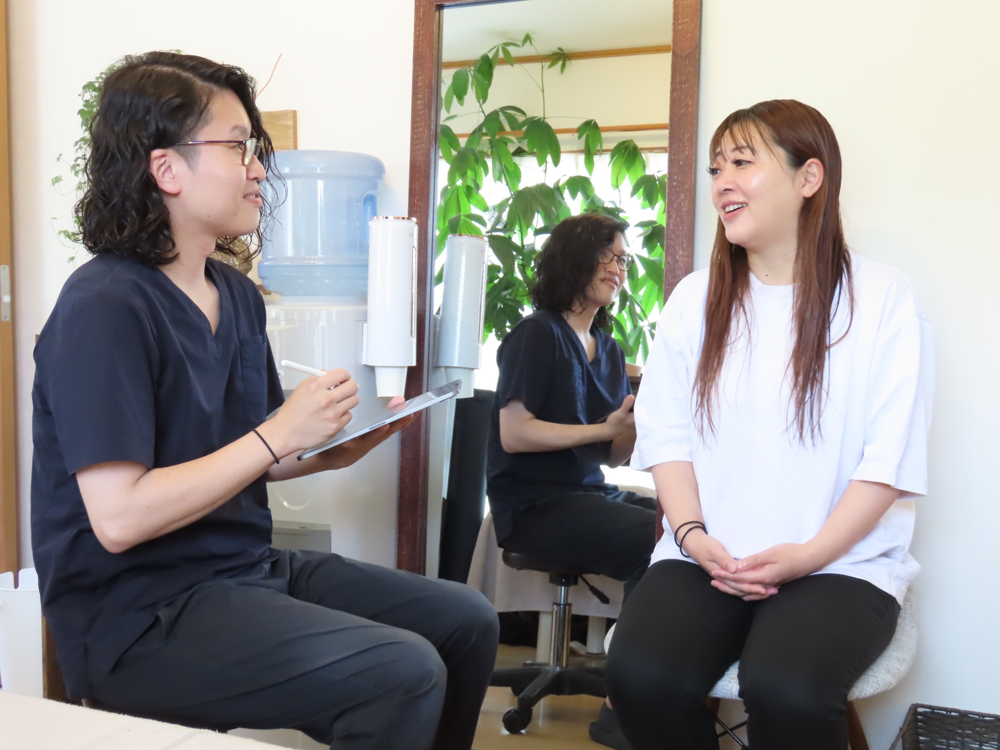
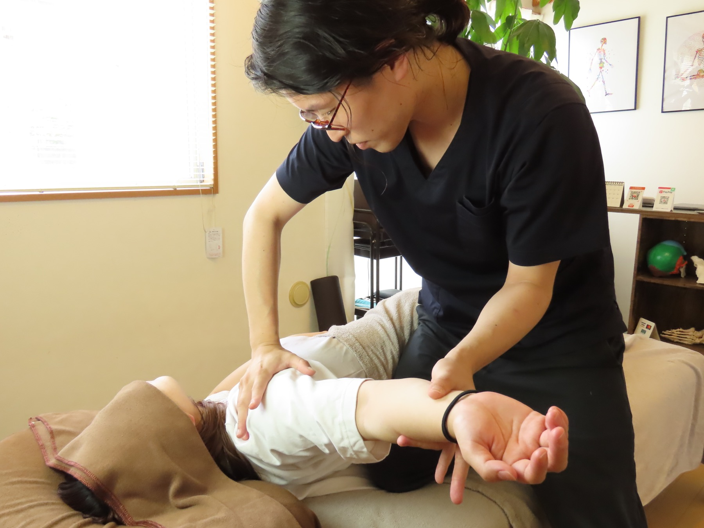
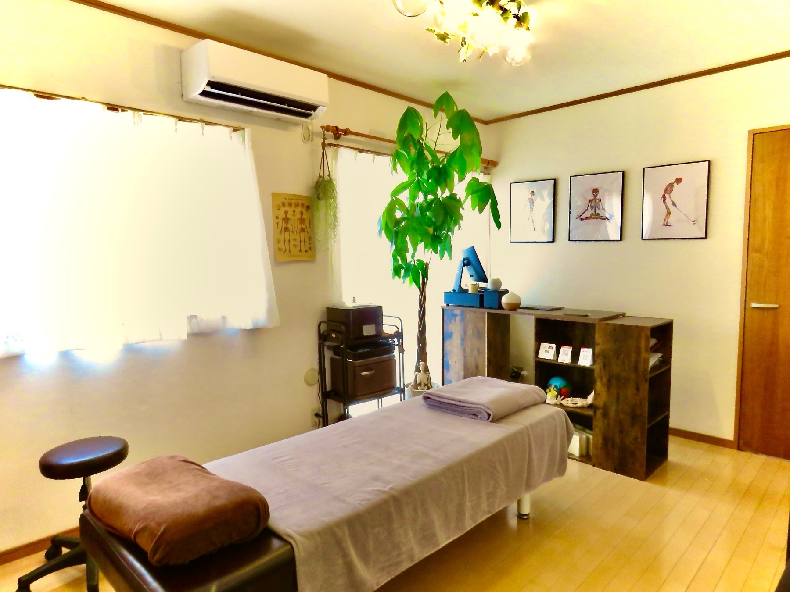
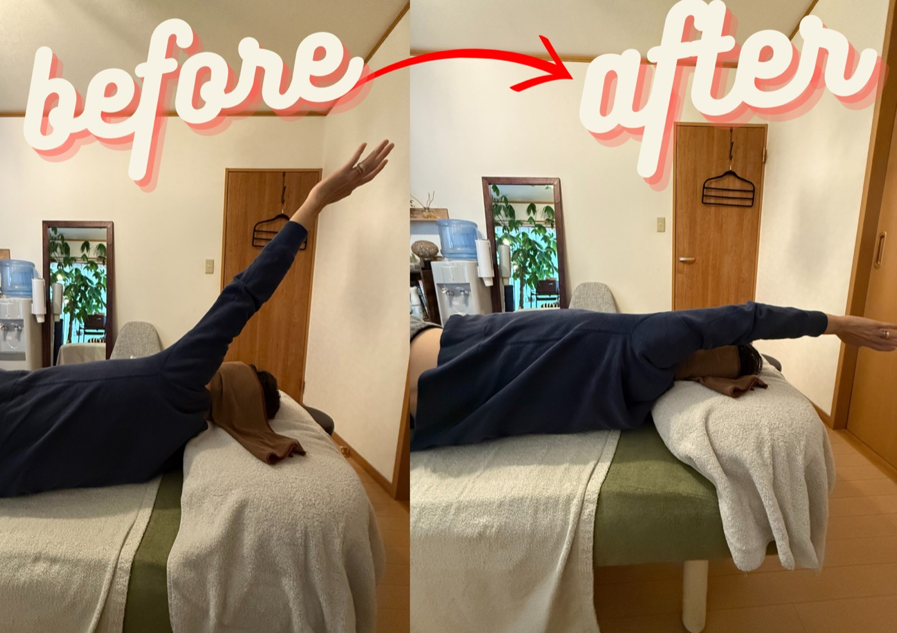
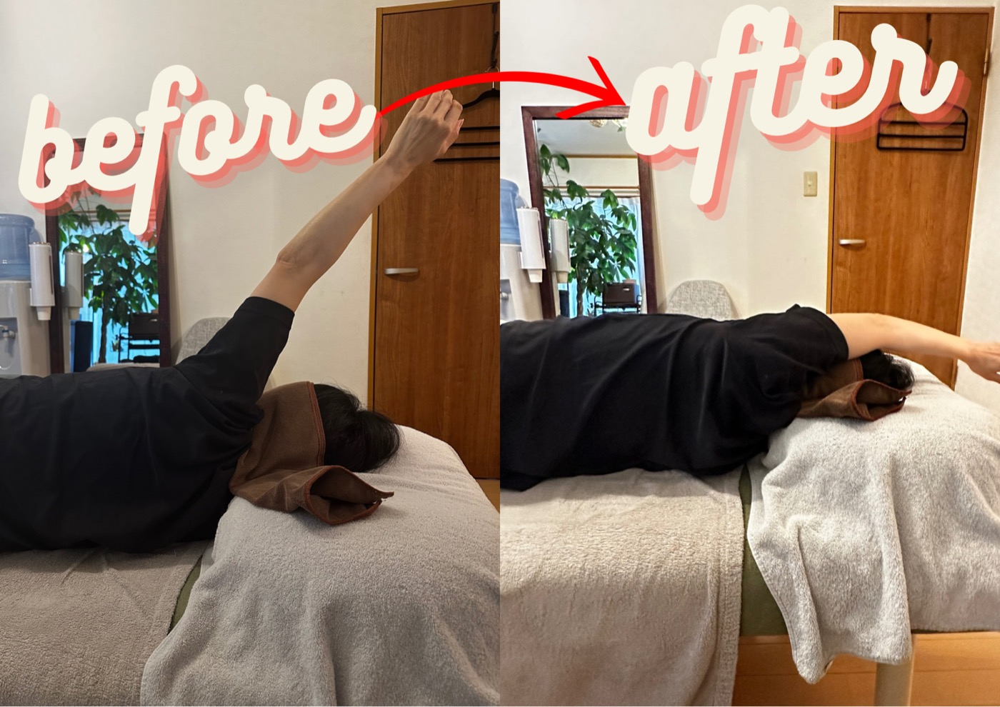
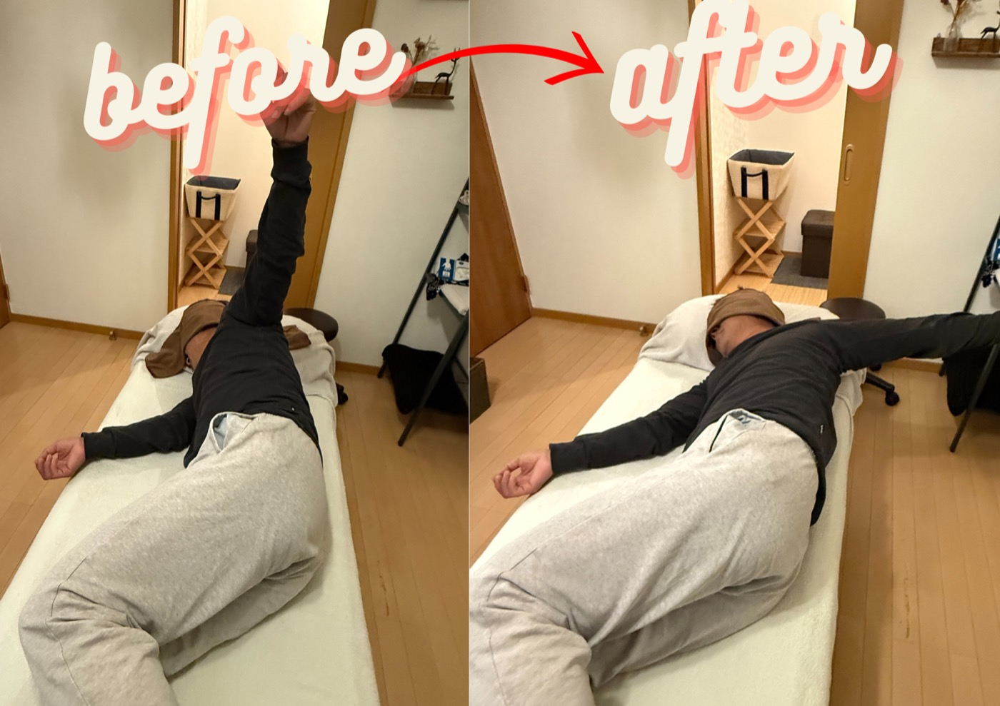
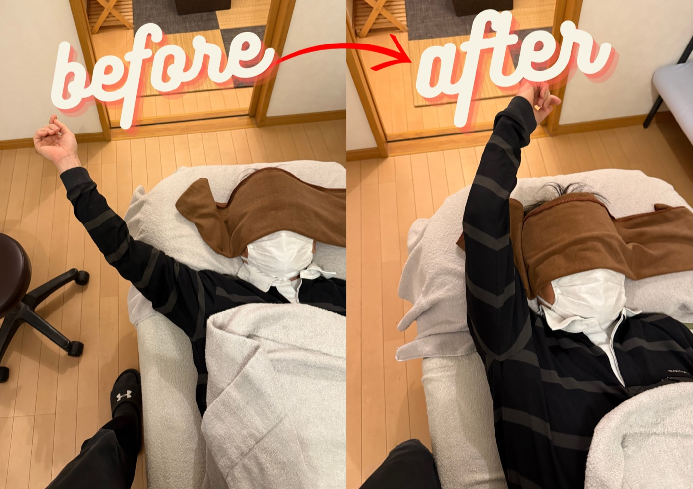

肩が前に入りやすい
巻き肩傾向では、胸まわりや首まわりの緊張が肩甲骨の動きを制限しやすくなります。
徳島市八万町の肩こり・首こり・肩甲骨ケア
揉んでも戻る肩こり・首こり・巻き肩に
肩こり・首こり、肩甲骨まわりの重さ、背中の張りが気になる方へ。整体&エステ MARE（マーレ）は肩甲骨・鎖骨・胸郭・首の連動を見立て、肩だけを揉むケアでは届きにくい「戻りやすさ」にアプローチします。
24時間ネット予約受付
日時・料金・メニュー内容を確認してから予約を確定できます。

施術風景または清潔感のある店内写真を配置できます。
お悩み
仕事中は肩が重い。帰宅後は背中まで張る。寝てもすっきりしない。そんな状態が続くと、身体のつらさだけでなく「また戻るかも」という不安も積み重なります。
肩がつらいから肩だけを揉む、肩甲骨が固いから肩甲骨だけを動かす。それでも繰り返してしまう場合、肩甲骨と一緒に動く鎖骨・胸郭・首の連動に背景が隠れていることがあります。MAREでは、つらさを一方的に決めつけず、動きのつながりを見立ててから施術に入ります。
24時間ネット予約受付
専門ケアが必要な理由
肩まわりは、鎖骨、胸郭、背骨、首、腕などが細かく連動して動きます。同じ姿勢が長く続くと、この連動が乱れ、肩だけをほぐしたり肩甲骨だけを動かしても戻りやすい状態になることがあります。
巻き肩傾向では、胸まわりや首まわりの緊張が肩甲骨の動きを制限しやすくなります。
筋肉をゆるめるだけでなく、肩甲骨が動くためのルートを整えないと、重さが戻りやすい場合があります。
肩甲骨の内側、鎖骨下、胸郭まわりなどは、セルフケアだけでは力が抜けにくい部分があります。
肩甲骨はがしとは
肩甲骨は背中の上を単独で動くのではなく、鎖骨、胸郭、首、腕、呼吸と連動しています。MAREでは、どこで動きが止まりやすいかを確認し、必要な部分へ順番にアプローチします。
肩甲骨の内側へ強く指を入れることが目的ではありません。身体の反応を見ながら、圧・角度・動かし方を調整します。
肩を揉んでも繰り返す場合、胸の固さ、鎖骨まわり、首の緊張、呼吸の浅さが関係していることがあります。
腕の上がりやすさ、首の向きやすさ、肩甲骨の滑り、呼吸の入り方を施術前後で確認し、変化を言葉と身体で確かめます。
肩甲骨や鎖骨まわりへ、やさしく施術している写真を配置できます。
整体&エステ MAREが考える肩甲骨はがし
整体&エステ MAREの肩甲骨はがしは、肩甲骨の内側へ強く指を入れることや、無理に肩甲骨を引き離すことを目的にした施術ではありません。
現場でよく見るのは、「肩がつらい」と感じていても、実際には胸が開きにくい、鎖骨まわりが動きにくい、首や腕に余計な力が入っているというケースです。
まず、肩を上げる・回す・呼吸する動きの中で、肩甲骨と連動している鎖骨、胸郭、首、背中のどこで動きが止まりやすいかを見立てます。
そのうえで、肩甲骨が滑る余裕、胸郭が広がる余裕、首や腕へ力が逃げない状態をつくるように調整します。検査、調整、再確認までを一連で行う肩まわりの専門技術です。
予約前に日時やメニュー内容をご確認いただけます。
納得のための証拠
徳島市で肩こりや肩甲骨まわりのケアを検討している方へ。実際の写真、口コミ、施術前後の確認内容から、整体&エステ MARE（マーレ）の施術をご検討いただけます。
肩甲骨まわりの軽さ、可動域、説明の丁寧さなど、来店後に寄せられた声を抜粋しています。
腕の上がり方や肩まわりの動きを一緒に確認します。写真は一例で、変化の感じ方には個人差があります。
カウンセリング、施術、店内の雰囲気を掲載し、来店前の不安を減らせるようにしています。
考え方の違い
一般的にイメージされやすい内容と比べながら、MAREの肩甲骨はがしで大切にしている技術ポイントをまとめました。
写真で見る整体&エステ MARE
施術前のカウンセリングから、肩甲骨まわりの確認、清潔な店内まで。初めての方にも雰囲気が伝わるよう、実際の写真を掲載しています。



確認するポイント
すべての方に同じ施術を行うのではなく、肩まわりの可動域、左右差、呼吸、力の入り方を確認しながら進めます。
向きやすさ、つっぱり感、肩との連動を確認します。
腕を上げる角度、重さの出方、肩甲骨の追従を見ます。
肩甲骨が背中の上を滑る余裕を確認します。
肩と胸をつなぐ鎖骨の動きやすさを見ます。
呼吸に合わせた胸郭の動きや固さを確認します。
息の浅さと肩まわりの緊張の関係を見ます。
日常で負担がかかりやすい姿勢パターンを評価します。
身体の反応に合わせて、手技の強さと方向を調整します。
変化の確認
写真は一例です。変化の感じ方には個人差があり、効果を保証するものではありません。整体&エステ MAREでは、施術後にも肩や首の動き、呼吸のしやすさなどを確認し、納得して帰れる状態を大切にしています。




24時間ネット予約受付
お客様の声
実際に寄せられた口コミをもとに、肩甲骨はがしを検討している方が気になりやすい内容を抜粋しています。初めての方が不安になりやすい、刺激の強さや説明の分かりやすさも確認できます。
デスクワークで背中や肩甲骨が固まっている感じがあり予約しました。施術後は可動域が広がり、軽さを感じました。ストレッチも教えていただきました。
肩甲骨まわりがガチガチでしたが、じっくり緩めてもらう施術で楽に感じました。終わった後は肩が軽く、スムーズに動くように感じました。
前から気になっていたお店でした。もっと早く行っていたらよかったと思うくらい満足できました。またお願いしたいです。
首の動きや手首の違和感まで見ていただき、自分では気づかなかった状態も説明してもらえました。施術後は身体が軽く感じました。
丁寧に検査や説明をしてくださり、首が動きづらい理由を身体を通して知ることができました。定期的に見てもらいたいと思いました。
めちゃくちゃ気持ちよかったです。肩も上がるようになってうれしいです。また行きます。
掲載している口コミは個人の感想であり、感じ方には個人差があります。効果を保証するものではありません。
日時を確認してから予約を確定できます。
施術の流れ
日常生活、仕事、つらさを感じる場面などを確認します。
首、肩、腕、肩甲骨、呼吸の動きを見て、どこで連動が止まりやすいか確認します。
肩甲骨が動きやすくなるための土台を、手技の角度と圧を調整しながら整えます。
状態に合わせて、肩甲骨の内側・外側・下角まわりを無理のない強さで動かします。
肩や首の動き、呼吸の入り方、腕の上がりやすさを一緒に確認します。
必要に応じて、自宅や仕事中にできる簡単なケアをお伝えします。
おすすめの方
別メニューの可能性
肩甲骨はがしだけを無理におすすめするのではなく、お悩みの範囲によっては全身整体などが適している可能性があります。
施術者とお客様が会話している写真や、スタッフ写真を配置できます。
施術者・店舗紹介
肩甲骨はがしという名前だけを見ると、痛い施術を想像する方もいらっしゃいます。整体&エステ MAREでは、無理に動かすのではなく、お身体の状態を確認しながら施術を進めます。刺激の強さや不安なことがあれば、遠慮なくお伝えください。
肩・首のお悩み相談
徳島市で肩や首のケアを探している方へ。肩の重さと、痛みを伴う動かしにくさでは、必要な対応が異なります。MARE（マーレ）では、お困りの動作や医療機関での診断・指示を伺い、ケアを受けられるかご相談いただけます。
デスクワーク中に肩が重い、首を向けにくい、肩甲骨まわりが張る。そのようなお悩みでは、肩だけでなく首・胸郭・腕の動きも確認します。肩甲骨はがし（肩甲骨剥がし）は、無理に骨を引き離す施術ではなく、身体の反応に合わせて肩まわりをケアするメニューです。
腕を上げると痛む、背中に手が回しにくいなどの症状は、肩こりと同じとは限りません。当店では四十肩・五十肩の診断や治療は行いません。痛みが続く、夜に痛む、急に肩が動かなくなった場合は、まず整形外科でご相談ください。診断や指示を受けている方は、その内容をお伝えください。
肩の痛みに関する参考情報：日本整形外科学会「五十肩（肩関節周囲炎）」
料金・メニュー詳細
肩甲骨はがし
期間限定・初回限定クーポン
初回限定 3,900円
通常クーポン 4,500円
肩甲骨だけでなく、鎖骨・胸郭・首・背中などの動きを評価しながら、肩まわりが自然に連動しやすい状態を目指します。まずは初回クーポンで、施術前後の動きの確認まで体験できます。
※こちらの価格は期間限定クーポンの内容です。予告なく終了する場合や、掲載後に内容・金額が変更されている可能性がありますので、ご予約の際は予約ページの表示内容を必ずご確認ください。
24時間ネット予約受付
よくある質問
A. 首こりや首・肩の重さもご相談いただけます。肩甲骨だけでなく、首や胸郭、腕の動きを確認し、状態に合わせてケアします。強い痛みやしびれがある場合は、まず医療機関でご相談ください。
A. 症状や医療機関の指示によって異なるため、一律におすすめはしていません。当店では診断や治療は行いません。痛みや動かしにくさがある場合は、まず整形外科で確認し、診断や指示の内容をお伝えください。無理に肩を動かす施術は行いません。
A. 肩甲骨を実際に剥がす施術ではなく、肩甲骨が背中の上を滑りやすくなるように、鎖骨・胸郭・首・腕との連動を整えるケアです。MAREでは、動きを確認してから状態に合わせて施術します。
A. 痛みを我慢していただくことを目的にはしていません。可動域や身体の反応を確認しながら、手技の角度・圧・動かし方を調整します。不安がある場合は施術前や施術中に遠慮なくお伝えください。
A. 皮膚や筋肉から肩甲骨を実際に剥がすわけではありません。肩甲骨が背中の上を滑りやすくなるように、鎖骨・胸郭・首との連動を整える専門ケアです。
A. 感じ方には個人差がありますが、多くの方に施術後の肩の動きや軽さの変化を感じていただいています。施術前後で可動域や首・肩の動きを一緒に確認するため、「思ったより動く」「肩が軽い」と実感される方が多いメニューです。
A. 気になる部分をほぐすだけでなく、肩甲骨と連動する鎖骨、胸郭、首の動きを評価し、必要な部分へ順番にアプローチする点が特徴です。
A. 肩そのものだけでなく、胸郭の固さ、鎖骨まわりの動きにくさ、首や腕の力み、呼吸の浅さなどが関係していることがあります。MAREでは肩甲骨だけで判断せず、周辺の連動を確認します。
A. ［着替えについての情報を入力］
A. ［店舗の対応方針を入力］
A. はい。整体&エステ MAREは完全予約制です。ご来店前にネット予約で空き状況をご確認ください。ご不明点がある場合は、お電話・公式LINEからもお問い合わせいただけます。
A. 首や肩、肩甲骨まわりを中心に受けたい方には肩甲骨はがしがおすすめです。複数の部位の悩みや、全身の姿勢まで詳しく見てほしい場合は、整体メニューが適していることがあります。迷う場合は、予約時の備考欄に現在のお悩みをご記入ください。
日時を確認してから予約を確定できます。
予約前の安心材料
清潔で落ち着いた店内写真を配置できます。
ご予約へ
肩甲骨だけを無理に動かすのではなく、鎖骨・胸郭・首との連動を評価し、肩まわりが自然に動きやすい状態を目指します。予約ページで空き日時とクーポン内容を確認してから確定できます。
公式LINEはQRからも登録できます スマホで表示している場合は、上のLINEボタンから登録・お問い合わせへ進めます。
ネット予約・お電話・公式LINEからお問い合わせいただけます。
日時を確認してから予約を確定できます。
所在地：徳島県徳島市八万町上福万9-36 市原ハイランドA棟
アクセス：市原バス停、メーアコルン八万店の近く
営業時間：11:00〜25:00
定休日：［定休日を入力］
電話番号：080-6397-3797
公式LINE：登録・お問い合わせはこちら